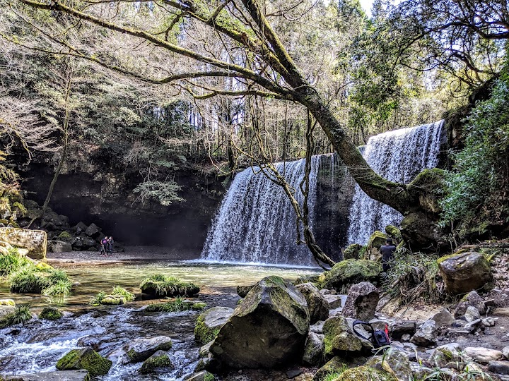
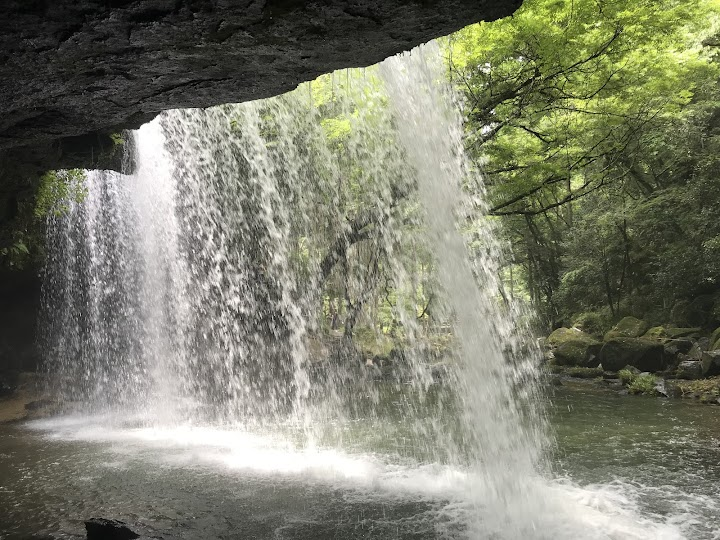
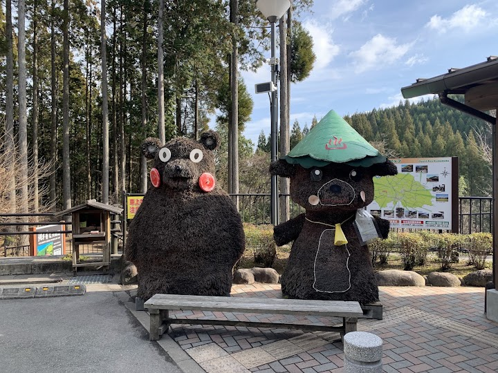
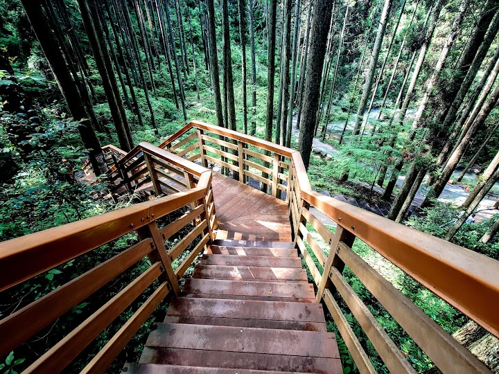
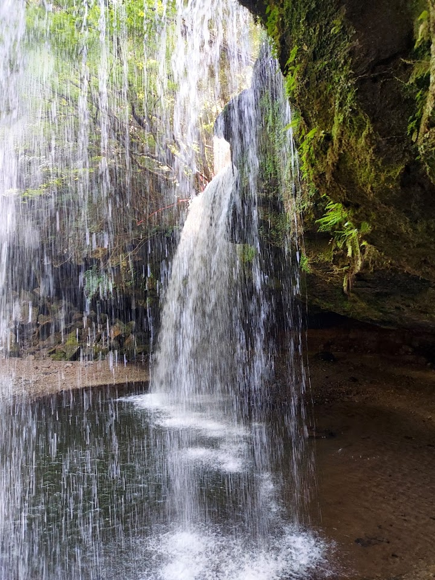

Nabegataki Falls
Nabegataki is a wide, curtain-like waterfall reached by a short walk, where you can walk behind the falling water. It is lit up at night, and the surrounding tall trees make it very photogenic.
Open in Google Maps (street view, more photos and reviews there)






Visitor tips on finding it and getting there
An easily reachable waterfall where you could walk around & behind it. Very photogenic and surrounded by tall trees. A good size parking lot , and cost 300 yen. Just take the well built stairs down and walk a short distance, you will be glad to have come here.
Beautiful waterfall at a 2 min walk from the parking lot. Lots of stairs though, so if you're not good with those, maybe skip this one. Lovely scenery and you're able to walk behind the waterfall! We went around midday and it was quiet and the sun was spilling over the falls beautifully.